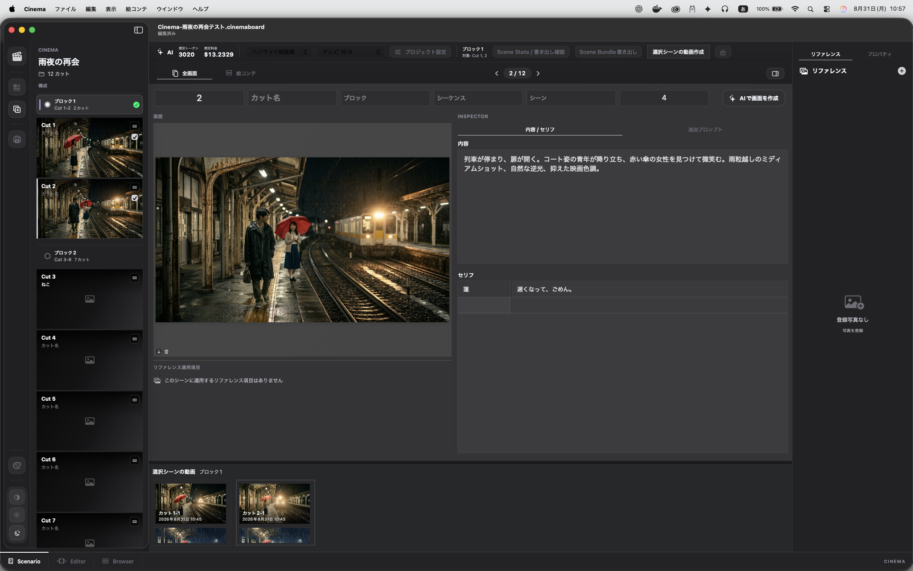

作品を定義する
ジャンル、世界観、雰囲気、キャラクター、演技の方向性を「プロジェクト設計」に記録します。
シーンを設計し、カットをつなぎ、映像にする。
Cinemaは、物語の一貫性を守るための制作ワークスペースです。
macOS 14以降 · Apple Silicon · Version 0.1.2
THE WHOLE PICTURE
Cinemaは、カット単位の生成ツールではありません。作品全体のトーン、登場人物、世界観、時間、光、音をひとつのプロジェクトに保ち、すべてのシーンへつなげます。
SCENARIO WORKSPACE
構成、画面、内容、セリフ、秒数、リファレンス、生成履歴。映画を考える流れを止めずに、すべてへアクセスできます。

ONE CONTINUOUS FLOW
ジャンル、世界観、雰囲気、キャラクター、演技の方向性を「プロジェクト設計」に記録します。
ブロックとカットを並べ、画面、内容、セリフ、秒数を絵コンテとして編集します。
人物、物、環境、カメラ、照明、出来事、時間、音をScene Stateとして管理します。
AIで画面を生成し、選択したカットを動画化。異なる生成バージョンも履歴として比較できます。
CONTINUITY BY DESIGN
同じシーンでは人物、衣装、小道具、天候、光、色温度、画面方向を引き継ぎます。変えるのは、そのカットで指定した要素だけ。場面が変わるときは、前のシーンを明確にリセットします。
PROVIDER FLEXIBILITY
画像と動画、それぞれに最適なサービスとモデルを選択。Cinemaは制作データを保ち、生成エンジンの違いを越えてプロジェクトをつなぎます。
画像生成
5 providers動画生成
4 providers画面比率
5 presets + customSCENE BUNDLE
プロンプト、Scene State、カット設定、画面比率、シード、参照画像を、バージョン管理されたScene Bundleとして書き出せます。Google ColabやGPUワーカーなど、別の生成環境へ渡しても作品の設計情報は崩れません。
Scene Bundle仕様を見る ↗